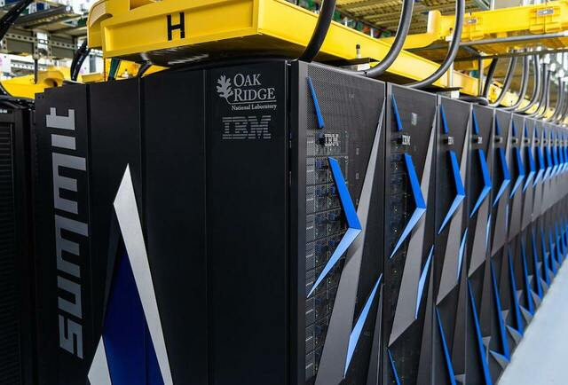

Definition
- HPC
- HPC systems tend to focus on tightly coupled parallel jobs, and as such they must execute within a particular site with low-latency interconnects. 
Wikipedia IT
- HPC
- Con High Performance Computing (HPC) (in italiano calcolo ad elevate prestazioni), in informatica, ci si riferisce alle tecnologie utilizzate da computer cluster per creare dei sistemi di elaborazione in grado di fornire delle prestazioni molto elevate nell'ordine dei PetaFLOPS, ricorrendo tipicamente al calcolo parallelo.
TOP 500
IPC - Process
- shared files / memory + semaphores
- pipes (named, unnamed)
- message queues unidirectional
- sockets (memory, network ) bi-directional
- signals
- RPC
- ONC/RPC, XML-RPC -> SOAP, CORBA, JSON-RPC, gRPC, ...
Approaches to message passing
- PVM
- Parallel Virtual Machine PVM
- MPI the Message Passing Interface
- MPI
MPI
--map-by hwthread --rank-by hwthread --bind-to hwthread --use-hwthread-cpus
mpirun --use-hwthread-cpus --bind-to hwthread -np 4
mpirun --map-by node : balanced - rrobin mpirun -nolocal
mpirun --use-hwthread-cpus --bind-to hwthread -np 1 search_mpi Elapsed wallclock time is 59.731 mpirun --use-hwthread-cpus --bind-to hwthread -np 2 search_mpi Elapsed wallclock time is 44.0702 mpirun --use-hwthread-cpus --bind-to hwthread -np 3 search_mpi Elapsed wallclock time is 31.4417
Pelican HPC
PelicanHPC over Virtualbox
First Steps ... sudo mkdir /cdrom sudo mount -oro /dev/sr1 /cdrom sudo /cdrom/VBoxLinuxAdditions.run
sudo ln -sf /home/etc/apt/sources.list /etc/apt/sources.list sudo apt update sudo apt install libatlas3-base sudo apt install gpm
cd hpl-2.0 sh SetupForPelican cd bin/Pelican HPC orterun --hostfile /home/usr/tmp/bhosts -np 4 xhpl